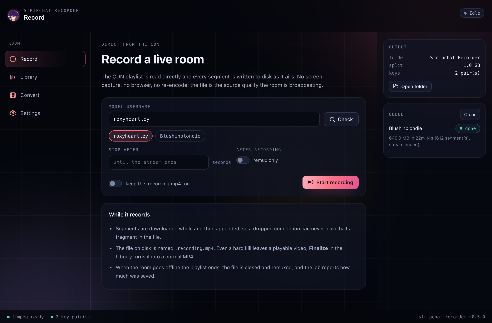
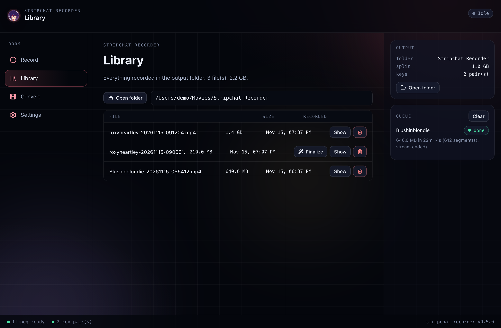
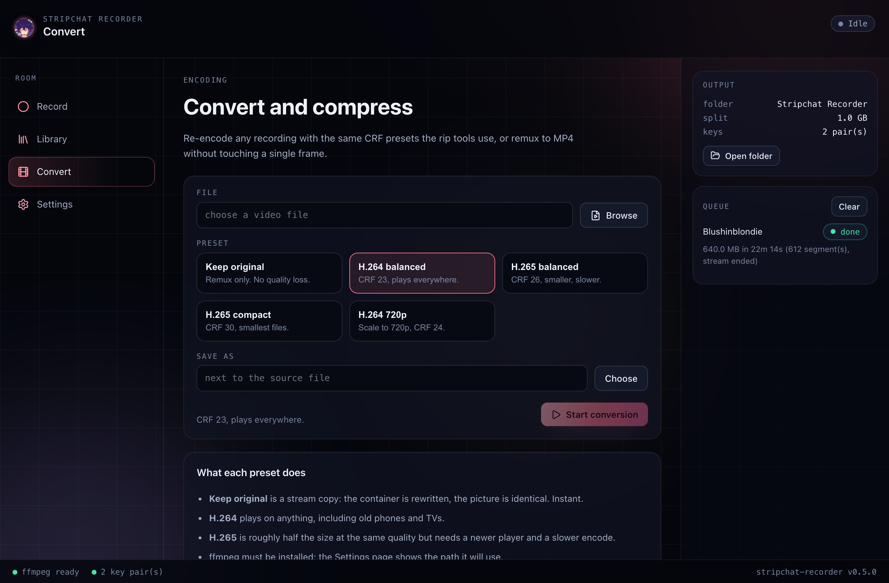
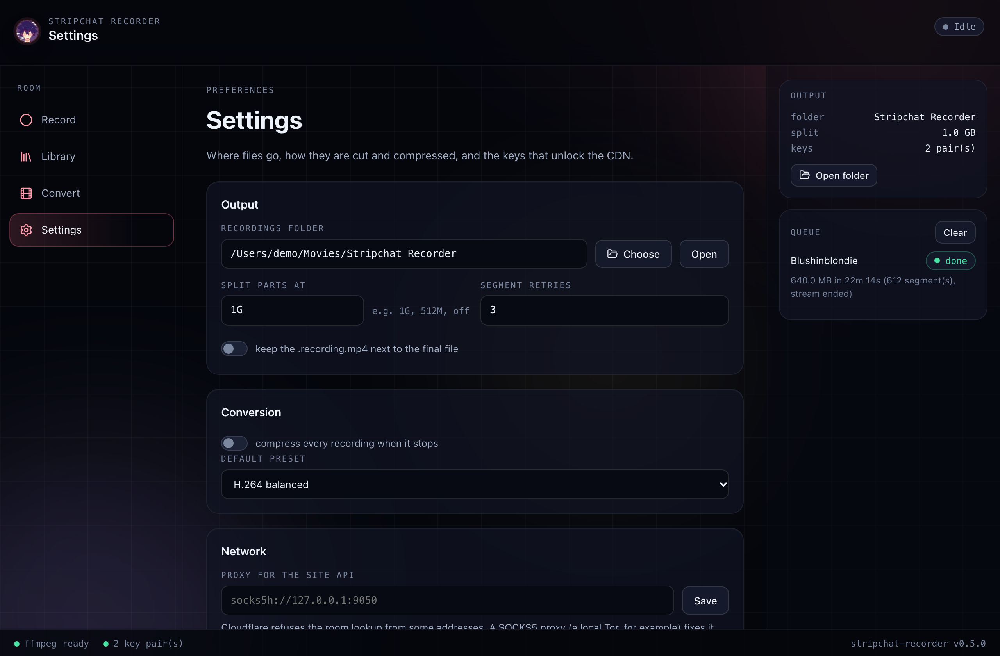

Direct from the CDN
The app reads the site's own HLS playlist and writes every segment as it airs. The file is what the room broadcasts, nothing re-encoded.
STRIPCHAT RECORDER
Record a live room, keep its source quality, compress it afterwards if you want.
Record, watch the queue, convert what you keep. The demo data shown is fixture data.




Recording is the product. Everything else exists so the file you keep is the right one.
The app reads the site's own HLS playlist and writes every segment as it airs. The file is what the room broadcasts, nothing re-encoded.
The source variant is picked by default; any variant the CDN lists can be chosen. MOUFLON v2 segment paths are decoded in-app.
A segment is only appended once it is whole, and every part carries its init segment. A hard kill leaves a playable video, never a half-written one.
Long recordings rotate into new files at a size you choose, 1 GiB by default, without breaking playback.
Remux to a clean MP4, or re-encode with H.264 or H.265 CRF presets, the same ones the rip tools use.
Every feature is scriptable: record, convert, list and check from a terminal, on macOS, Windows and Linux.
Builds for macOS (arm64 and x64), Windows and Linux, plus a headless CLI. Not notarized: right-click, Open on first launch.
Loading the latest build list ...
Short, practical walkthroughs. They live in the repository so they stay next to the code.